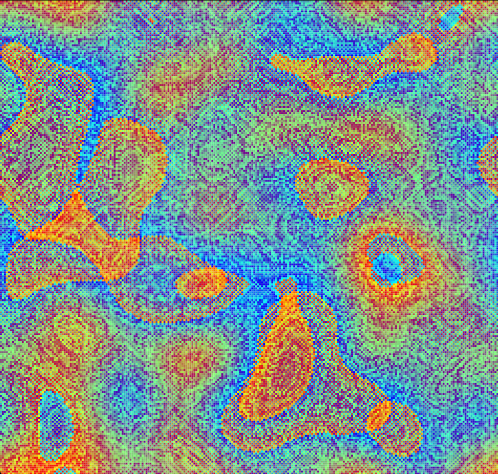
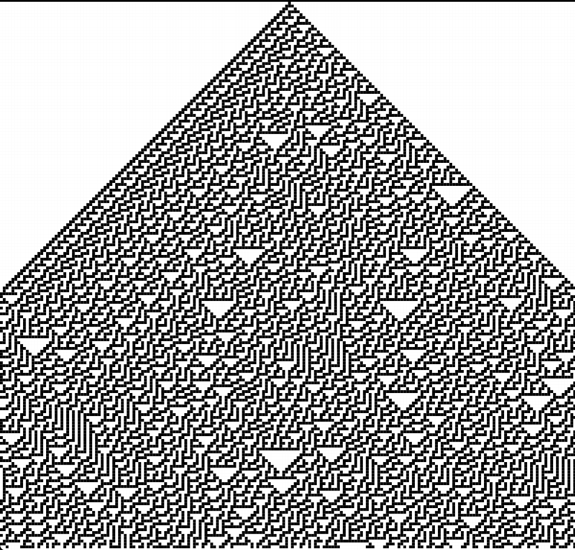
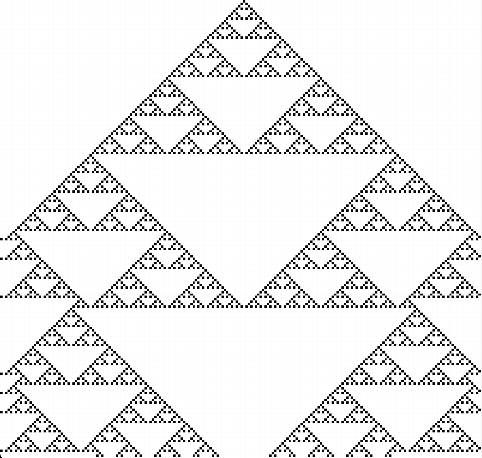

Overview
This project implements a wide range of cellular automata, mathematical models used to simulate how cells evolve in a grid. The application includes a complete graphical interface for observing complex behaviour emerging from local rules, well beyond pre-programmed classic automata.
The main technical challenge: a custom rule engine
The largest technical challenge was avoiding hardcoding. Instead of coding every automaton statically, we built a generic engine capable of interpreting JSON configuration files at runtime.
This lets users define their own automata from scratch:
- Structure: Define dimensionality and the list of possible states (the alphabet).
- Weighted neighborhood: Specify exact neighbor coordinates and assign weights, for example to simulate wind in a forest fire model.
- Logic and randomness: Define transition tables and probabilities that sum to 1 to introduce stochastic behaviour.
Classic automata implemented
With that engine, several models could be recreated quickly:
- Game of Life: The classic 2D automaton showing self-organisation.
- Forest fire propagation: Simulation with spread probabilities and spontaneous ignition.
- 1D automata: Exploration of elementary rules such as Rule 30 using binary rule numbers.
- Continuous rules (Average & Majority): Models for heat waves or consensus in arbitrary dimensions.
Interface features
- Hexagonal support: Rendering and neighborhood adaptation for hex grids.
- Map editing: Interactive drawing tools, state replacement, random generation and save/load support.
- Simulation control: Play, pause, step-by-step advance and runtime speed adjustments.
Gallery




Technical architecture
- Language: Java 24.
- GUI: JavaFX with an MVC architecture (FXML files).
- JSON engine: Dynamic parsing and interpretation of rule files into Java object logic.
- Modularity: Clear separation between the logical core, the rule engines and the GUI.
- Build system: Gradle.